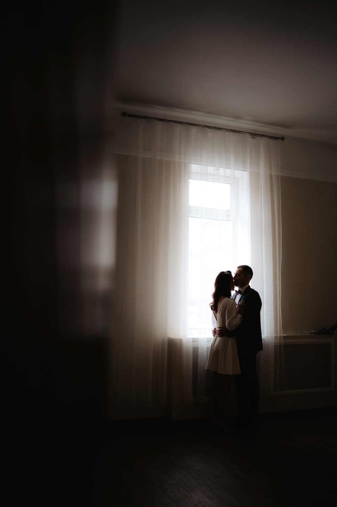
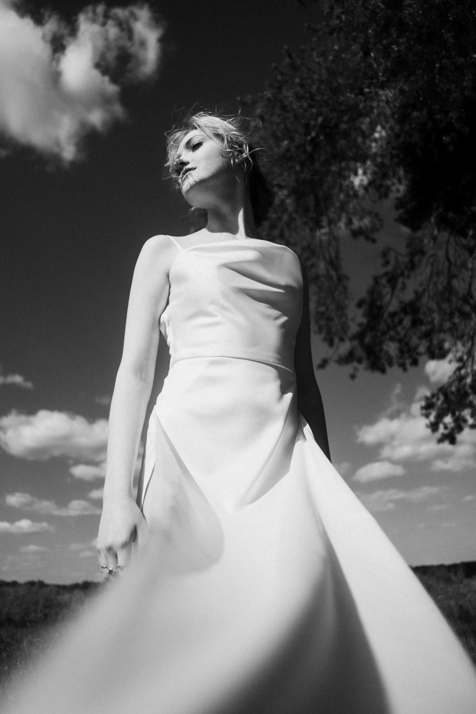
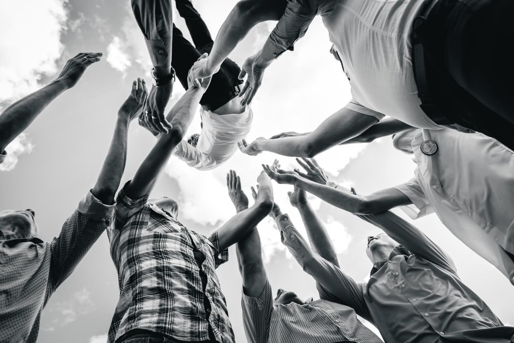
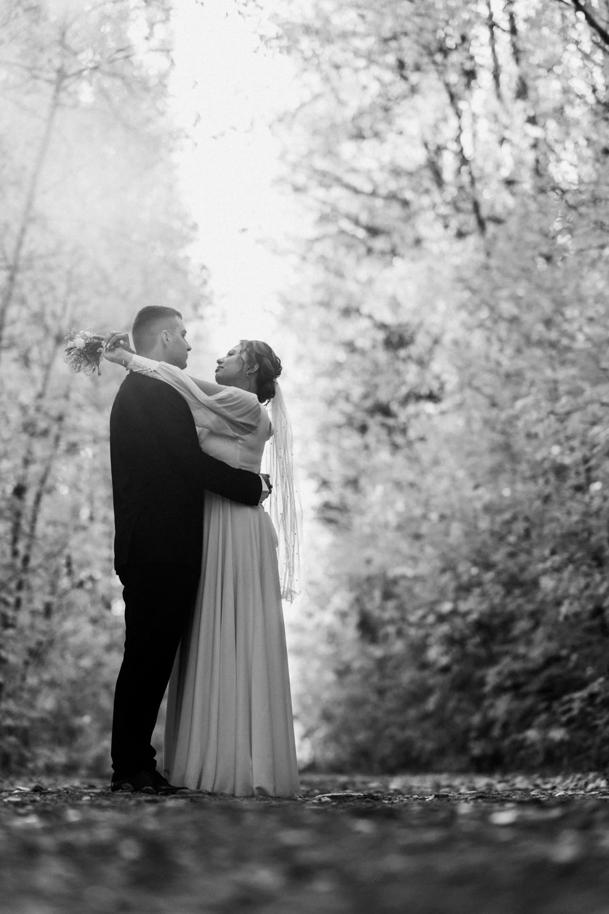
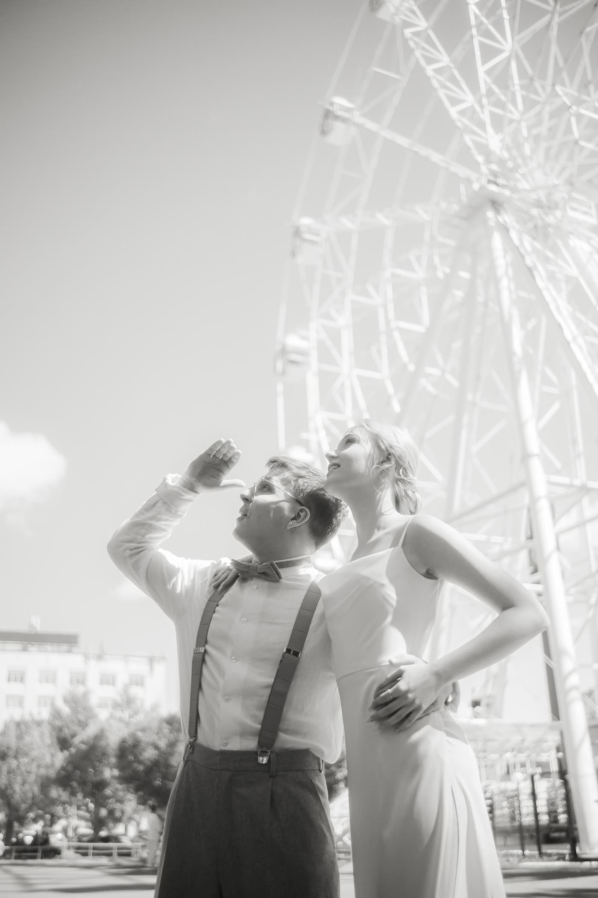
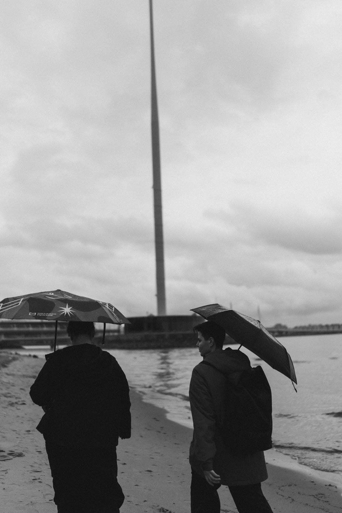
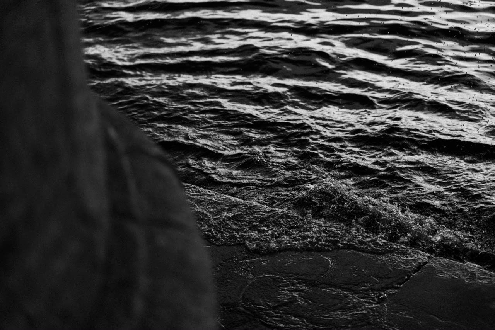
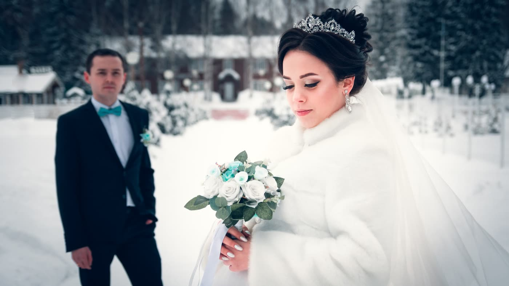
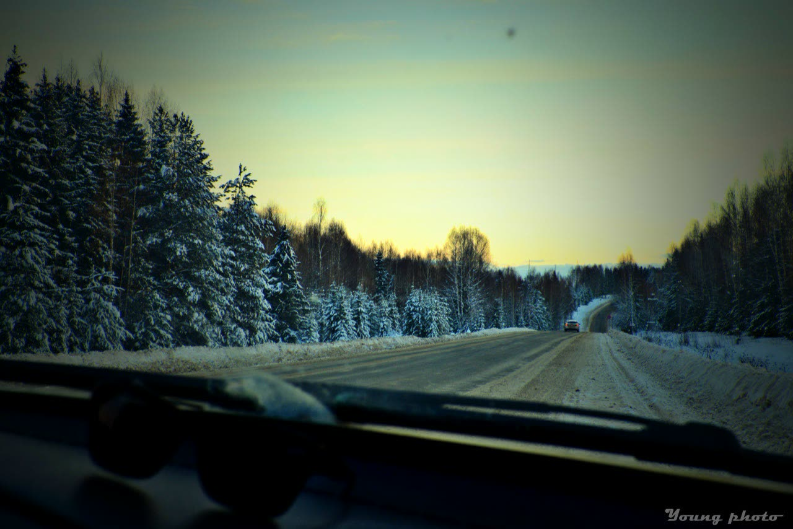

Свадьбы и love story
Снимаю день целиком или спокойную прогулку вдвоём. Без бесконечных постановок: показываю, как вам друг с другом.
Фотограф - Киров
Меня зовут Александр Шихалев. Свадьбы, портреты, живые события. Люблю чёрно-белый кадр, тихий свет и моменты, которые невозможно отрепетировать.


Снимаю день целиком или спокойную прогулку вдвоём. Без бесконечных постановок: показываю, как вам друг с другом.

Съёмка для себя, для работы или просто потому, что захотелось. Помогу расслабиться, если перед камерой непривычно.

Праздник, вечеринка, любое живое событие. Не мешаю происходящему, просто ловлю то, что случается само.

Фото для соцсетей и сайта: место, атмосфера, люди, товар. Отдаю подборку под нужные вам форматы.
Место и формат обсуждаем под задачу: студия, улица, ваше событие. Напишите в VK, разберёмся с деталями.










Я Александр, фотограф из Кирова. Снимаю здесь и в поездках: свадьбы, портреты, живые события. Больше всего люблю чёрно-белое: когда из кадра уходит цвет, остаётся главное - свет, жест, взгляд.
Работаю просто: обсуждаем идею, договариваемся о месте и времени, снимаем без спешки. Все свежие работы выкладываю на странице Young Photo в ВК, там их больше всего.
